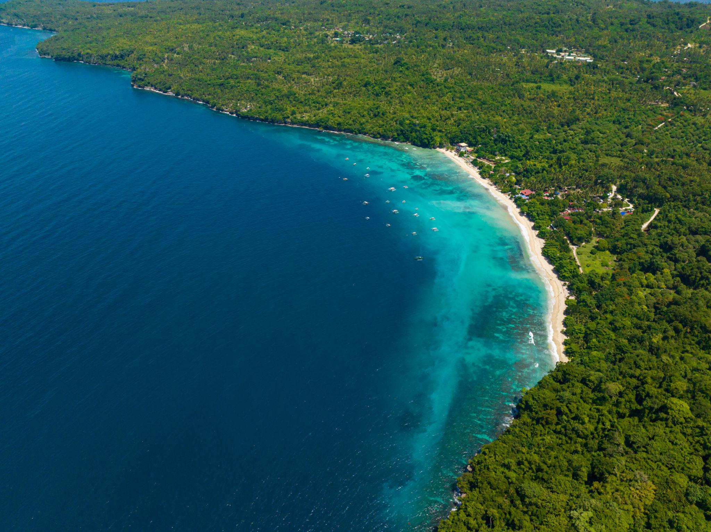
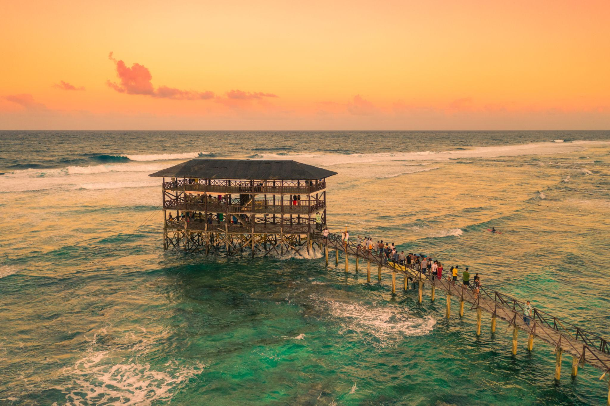
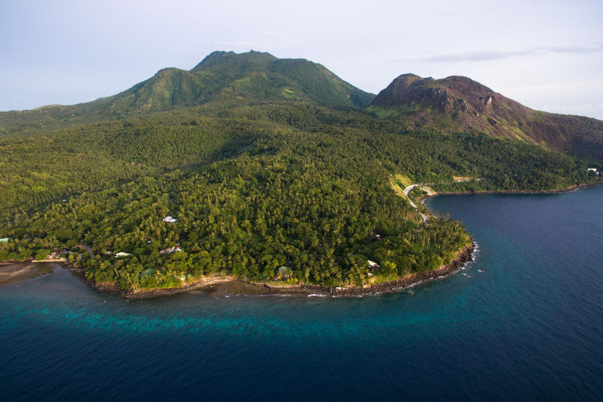

Destinations



Mindanao offers various destinations for travelers who enjoy nature, adventure, beaches, and cultural experiences.
Recommended destinations:
- Davao City - Known for its cleanliness, durian, and proximity to Mount Apo.
- Siargao, Surigao del Norte - Famous for surfing, beautiful beaches, and island adventures.
- Camiguin - Known as the Island Born of Fire because of its volcanic history.
- Samal Island, Davao del Norte - Popular for its beaches, resorts, and clear waters.
- Bukidnon - Known for its cool climate, mountains, and scenic agricultural landscapes.
- Zamboanga City - Famous for its cultural diversity, colorful traditions, and beautiful coastal attractions.